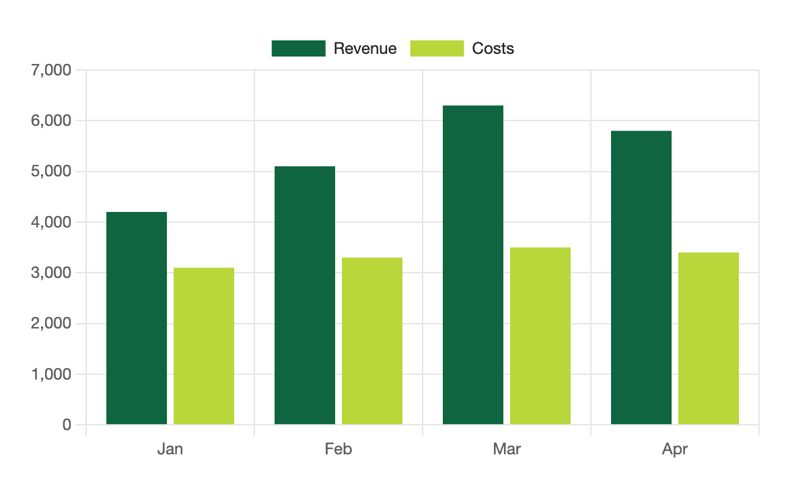
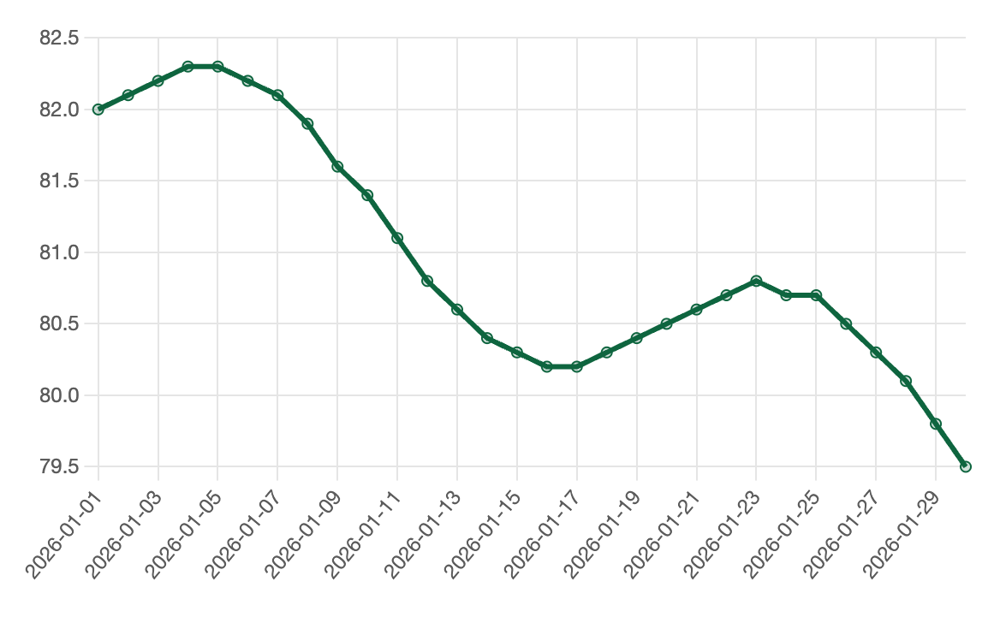

Your theme's colours, by default
The first series takes the accent colour, the rest follow the theme's other colours. Toggle dark mode and every open chart recolours in under a tenth of a second.

An Obsidian plugin
S-Charts draws bar, line, pie and four more chart types from a table in your note, or from the properties of many notes. Your data stays plain text.
In your note
```s-chart
type: bar
---
| Month | Revenue | Costs |
| ----- | ------- | ----- |
| Jan | 4200 | 3100 |
| Feb | 5100 | 3300 |
| Mar | 6300 | 3500 |
| Apr | 5800 | 3400 |
```What you see

What it does
No setup. Charts pick up your theme's accent, axis colours and font, then redraw when you switch theme or turn on dark mode.
The first series takes the accent colour, the rest follow the theme's other colours. Toggle dark mode and every open chart recolours in under a tenth of a second.
Make named palettes of up to 12 colours in settings, then add palette: brand to a chart. Edit a colour and the open charts follow.
Point a chart at #daily and plot weight by date across every note.

Charts print fully drawn and scaled to the page, at twice the screen's pixel density.
2x
Chart types
The same table works for each type. Change type: and the chart redraws when you leave the block.
Write a chart
A code block with the language s-chart. Settings above a --- line, a markdown table below it. Run Insert chart from the command palette for a sample.
```s-chart
type: line
title: Monthly revenue
legend: bottom
---
| Month | Revenue | Costs |
| ----- | ------- | ----- |
| Jan | 4200 | 3100 |
| Feb | 5100 | 3300 |
| Mar | 6300 | 3500 |
```The first column holds the labels. Every other column is one series, named by its header.
typetitlepalettecolorsheightstacked, horizontaltrue or falselegendx-label, y-label42004,200$4,200KWD 4,20042%-3.5Currency symbols, three-letter codes, thousands commas and percent signs are read for you. Tooltips format numbers for your locale.
```s-chart
type: line
source: "#daily"
x: date
y: weight
```source is a tag or a folder. Change a property in any of those notes and the chart updates within half a second.
Line 1: unknown type "bars". Use bar, line, area, pie, doughnut, scatter or radar.
A block the plugin can't read says which line and why, instead of leaving a blank space. A misspelt key such as pallet gets "did you mean palette?" and the chart still draws.
In live preview, hover over a chart and select the </> button in its top-right corner to see the block's text again.
Everything runs on your device. No network requests, nothing collected, and the plugin never edits your notes. Turn it off and your table is still there, readable as plain text.
Install
S-Charts is not in Obsidian's community plugin list yet. Until it is, install it by hand. Needs Obsidian 1.5.0 or later, on desktop or mobile.
main.js, manifest.json and styles.css from the latest release.
Put the three files in .obsidian/plugins/s-charts/ inside your vault.
Restart Obsidian, then Settings → Community plugins and enable S-Charts.
Run Insert chart from the command palette in any note.
Free, MIT licensed, and built in the open. Bug reports and ideas are welcome on GitHub.
Get the latest release